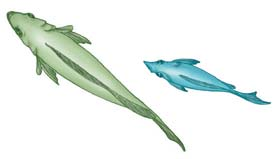

19 Cambio evolutivo en poblaciones
411
CONCEPTOS CLAVE
19.1 Es posible calcular el genotipo, el fenotipo y las frecuencias alélicas del acervo genético (todos los alelos de todos los loci) de una población. 19.2 El principio de Hardy-Weinberg predice las frecuencias alélicas y genotípicas de una población que no evoluciona. 19.3 La selección natural, así como el apareamiento no aleatorio, las mutaciones, la deriva genética y el fl ujo genético son fuerzas que impulsan los cambios en el acervo genético de una población a lo largo de generaciones sucesivas (microevolución). Los modos de selección natural incluyen selección estabilizadora, selección direccional y selección disruptiva. 19.4 Por lo general, las poblaciones muestran variación genética, que puede incluir polimorfi smo genético, polimorfi smo equilibrado o variación geográfi ca.
C
omo aprendió en el capítulo 18, la evolución ocurre en las poblaciones, no en los individuos. Aunque la selección natural actúa sobre los individuos provocando supervivencia y reproducción diferencial, los individuos no evolucionan durante sus vidas. El cambio evolutivo, que incluye modifi caciones en estructura, fi siología, ecología y comportamiento, se hereda de una generación a la siguiente. Aunque Darwin reconoció que la evolución ocurre en las poblaciones, no entendió cómo los atributos de los organismos se transmiten a generaciones sucesivas. Uno de los avances más signifi cativos de la biología desde la época de Darwin fue la demostración de la base genética de la evolución. Recuerde del capítulo 18 que una población consiste de todos los individuos de la misma especie que viven en un lugar particular al mismo tiempo. Los individuos dentro de una población varían en muchos caracteres reconocibles. Por ejemplo, una población de caracoles puede variar en tamaño de concha, peso o color (vea la fotografía). Algunas de estas variaciones se deben a la herencia y algunas se deben al ambiente (variación no hereditaria), como las diferencias individuales que se observan en el color rosa de los fl amencos, que en parte es atribuible a diferencias en la dieta. Los biólogos estudian la variación en un carácter (característica) particular al tomar mediciones de dicho carácter en una población. Al compa-
Variación genética en conchas de caracol. Aquí se muestran patrones y colores de conchas en una sola especie de caracol ( Cepaea nemoralis ), nativa de Escocia. La variación de color en la concha pudo tener valor adaptativo en estos caracoles porque algunos colores predominan en ambientes más fríos, mientras que otros son más comunes en hábitats más cálidos.
G. I. Bernard/Animals Animals
412 Capítulo 19
rar el carácter en progenitores y descendientes, es posible estimar la cantidad de variación observada, esto es genética, la cual se representa mediante el número, frecuencia y tipos de alelos en una población. (Recuerde del capítulo 11 que un alelo es una de dos o más formas alternativas de un gen. Los alelos ocupan posiciones correspondientes, o loci , en cromosomas homólogos). Este capítulo le ayudará a comprender la importancia de la variación genética como la materia prima para la evolución y los conceptos básicos de la genética de poblaciones , el estudio de la variabilidad genética dentro de una población y de las fuerzas evolutivas que actúan sobre ella. La genética de poblaciones representa una extensión de los principios de la herencia de Gregor Mendel (consulte el capítulo 11). Aprenderá cómo distinguir entre equilibrio genético y cambio evolutivo, y a valorar las funciones de los cinco factores responsables del cambio evolutivo: apareamiento no aleatorio, mutación, deriva genética, fl ujo genético y selección natural.
19.1 GENOTIPO, FENOTIPO Y FRECUENCIAS ALÉLICAS
OBJETIVOS DE APRENDIZAJE
1 Defi nir qué se entiende por acervo genético de una población. 2 Distinguir entre genotipo, fenotipo y frecuencias alélicas.
Cada población posee un acervo genético que incluye todos los alelos para todos los loci representados en la población. Puesto que los organismos diploides tienen un máximo de dos alelos diferentes en cada locus genético, un solo individuo suele tener sólo una pequeña fracción de los alelos presentes en el acervo genético de una población. La variación genética que es evidente entre los individuos de una población dada indica que cada individuo tiene un subconjunto distinto de los alelos en el acervo genético. La evolución de la población se entiende mejor en términos de genotipo, fenotipo y frecuencias alélicas. Por ejemplo, suponga que se pone a prueba el genotipo de los 1000 individuos de una población hipotética y se obtienen los siguientes resultados:
Genotipo Número Frecuencia genotípica
AA 490 0.49
Aa 420 0.42
aa 90 0.09
Total 1000 1.00
Cada frecuencia genotípica es la proporción de un genotipo particu lar en la población. La frecuencia genotípica por lo general se expresa como una fracción decimal y la suma de todas las frecuencias genotípicas es igual a 1.0 (de manera similar a las probabilidades, que se estudiaron en el capítulo 11). Por ejemplo, la frecuencia genotípica para el genotipo Aa es 420 ÷ 1000 = 0.42. Una frecuencia fenotípica es la proporción de un fenotipo particular en la población. Si cada genotipo corresponde a un fenotipo específi co, entonces las frecuencias fenotípica y genotípica son iguales. Sin embargo, si el alelo A es dominante sobre el alelo a , las frecuencias fenotípicas en la población hipotética serían las siguientes:
Fenotipo Número Frecuencia fenotípica
Dominante 910 0.91
Recesivo 90 0.09
Total 1000 1.00
En este ejemplo, el fenotipo dominante es la suma de dos genotipos, AA y Aa , de modo que el número 910 se obtiene al sumar 490 + 420. Una frecuencia alélica es la proporción de un alelo específi co (esto es, de A o a ) en una población particular. Como se mencionó antes, cada individuo, al ser diploide, tiene dos alelos en cada locus genético. Puesto que se comenzó con una población de 1000 individuos, debe considerarse un total de 2000 alelos. Los 490 individuos AA tienen 980 alelos A , mientras que los 420 individuos Aa tienen 420 alelos A , lo que hace un total de 1400 alelos A en la población. El número total de alelos a en la población es 420 + 90 + 90 = 600. Ahora es fácil calcular las frecuencias alélicas:
Alelo Número Frecuencia alélica
A 1400 0.7
a 600 0.3
Total 2000 1.0
Repaso
■ ¿ El término acervo genético se aplica a individuos, poblaciones o ambos?
■ ¿Las frecuencias de todos los genotipos en una población pueden determinarse directamente con respecto a un locus que sólo tenga dos alelos, uno dominante y el otro recesivo?
■ En una población humana de 1000, 840 pueden enrollar la lengua ( TT o Tt ) y 160 no pueden enrollar la lengua ( tt ). ¿Cuál es la frecuencia del alelo dominante ( T ) en la población?
19.2 EL PRINCIPIO DE HARDY-WEINBERG
OBJETIVOS DE APRENDIZAJE
3 Discutir el signifi cado del principio de Hardy-Weinberg en su relación con la evolución y elaborar una lista de las cinco condiciones requeridas para el equilibrio genético. 4 Usar el principio de Hardy-Weinberg para resolver problemas que involucren poblaciones.
En el ejemplo recién estudiado se observó que sólo 90 de los 1000 individuos en la población presentan el fenotipo recesivo característico del genotipo aa . Los restantes 910 individuos presentan el fenotipo dominante y son AA o Aa . Es posible suponer que, después de muchas generaciones, la recombinación genética durante la reproducción sexual haría que el alelo dominante se volviera más común en la población. También es posible suponer que el alelo recesivo desaparecería a la larga por completo. Éstas eran suposiciones comunes de muchos biólogos a principios del siglo xx. Sin embargo, tales suposiciones son incorrectas porque las frecuencias de los alelos y los genotipos no cambian de generación en generación a menos que reciban infl uencia de factores externos (que se estudian más adelante en este capítulo).
Cambio evolutivo en poblaciones 413
es igual a la raíz cuadrada de 0.09 o 0.3. A partir de la relación entre p y q se concluye que la frecuencia p del alelo dominante A es igual a 1 − q = 1 − 0.3 = 0.7. Dada esta información, se puede calcular la frecuencia de los individuos homocigotos dominantes ( AA ): p 2 = 0.7 × 0.7 = 0.49 ( FIGU -
RA 19-1 ). La frecuencia esperada de los individuos heterocigotos ( Aa ) sería 2 pq = 2 × 0.7 × 0.3 = 0.42. Por ende, se espera que aproximadamente 490 individuos sean homocigotos dominantes y que 420 sean heterocigotos. Observe que la suma de los individuos homocigotos dominantes y heterocigotos es igual a 910, el número de individuos que muestran el fenotipo dominante con el que se inició. Cualquier población en la que la distribución de genotipos cumple con esta relación p 2 + 2 pq + q 2 = 1, sea cual sea el valor de p y q , se dice que está en equilibrio genético. El principio de Hardy-Weinberg permite a los biólogos calcular las frecuencias alélicas en una población dada si se conocen las frecuencias genotípicas y viceversa. Dichos valores proporcionan una base de comparación con las frecuencias alélicas o
Se dice que una población cuyas frecuencias alélicas y genotípicas no cambian de generación en generación está en equilibrio genético . Dicha población, sin cambio en frecuencias alélicas o genotípicas no experimenta variación evolutiva en el tiempo. Una población que está en equilibrio genético no evoluciona con respecto al locus por estudiar. Sin embargo, si las frecuencias alélicas cambian a lo largo de generaciones sucesivas, ocurre evolución. La explicación de la estabilidad de generaciones sucesivas en poblaciones con equilibrio genético la proporcionaron de manera independiente Godfrey Hardy, un matemático inglés, y Wilhelm Weinberg, un médico alemán, en 1908. Ambos puntualizaron que las frecuencias esperadas de varios genotipos en una población pueden describirse de manera matemática. El resultante principio de Hardy-Weinberg muestra que, si la población es grande, el proceso de herencia no causa por sí mismo cambios en las frecuencias alélicas. También explica por qué los alelos dominantes no necesariamente son más comunes que los recesivos. El principio de Hardy-Weinberg representa una situación ideal que rara vez ocurre en el mundo natural. Sin embargo, es útil porque proporciona un modelo para ayudar a comprender el mundo real. El conocimiento del principio de Hardy-Weinberg es esencial para entender los mecanismos del cambio evolutivo en poblaciones que se reproducen sexualmente. Ahora se extenderá el ejemplo original para ilustrar el principio de Hardy-Weinberg. Tenga en mente, conforme realice estos cálculos, que en la mayoría de los casos sólo se conocen las frecuencias fenotípicas. Cuando los alelos son dominantes y recesivos, por lo general es imposible distinguir visualmente entre individuos heterocigotos e individuos dominantes homocigotos. El principio de Hardy-Weinberg permite usar frecuencias fenotípicas para calcular las frecuencias genotípicas y alélicas esperadas si se supone tener una comprensión clara de la base genética del carácter motivo de estudio. Como se mencionó líneas arriba, la frecuencia de cualquier alelo, A o a , se representa mediante un número que varía de 0 a 1. Un alelo que esté totalmente ausente de la población tiene una frecuencia de cero. Si todos los alelos de un locus dado son iguales en la población, entonces la frecuencia de dicho alelo es 1. Dado que sólo dos alelos, A y a , existen en el locus del ejemplo, la suma de sus frecuencias debe ser igual a 1. Si p representa la frecuencia del alelo dominante ( A ) en la población y q la frecuencia del alelo recesivo ( a ), entonces puede resumir su relación con una ecuación binomial simple, p + q = 1. Cuando se conoce el valor de p o de q , puede calcular el valor del otro: p = 1 − q, y q = 1 − p . Al elevar al cuadrado ambos lados de p + q = 1 se obtiene ( p + q ) 2 = 1. Esta ecuación puede expandirse para describir la relación de las frecuencias de los alelos con los genotipos en la población. Cuando se expande, se obtiene la frecuencia de los genotipos de la descendencia:
p 2 + 2 pq + q 2 = 1 Frecuencia de AA Frecuencia de Aa Frecuencia de aa Todos los individuos en la población
Los cálculos Hardy-Weinberg siempre comienzan con la determinación de la frecuencia del genotipo recesivo homocigoto. A partir del hecho de que en la población de 1000 se tienen 90 individuos recesivos homocigotos, se infi ere que la frecuencia del genotipo aa , q 2 , es 90/1000 o 0.09. Dado que q 2 es igual a 0.09, q (la frecuencia del alelo recesivo a )
Frecuencias alélicas en gametos masculinos
q = 0.3
p = 0.7
Genotipos AA Aa aa
0.49 0.42 (0.21 + 0.21) 0.09
Frecuencia de genotipos en la población
Frecuencia de alelos en gametos A = 0.49 + 0.21 = 0.7 a = 0.21 + 0.09 = 0.3
Frecuencias alélicas en gametos femeninos
A a
p = 0.7 q = 0.3
A
a
p 2 = 0.7 × 0.7 = 0.49
AA
pq = 0.7 × 0.3 = 0.21
Aa
q 2 = 0.3 × 0.3 = 0.09
aa
pq = 0.7 × 0.3 = 0.21
Aa
Frecuencias genotípicas y alélicas. La figura ilustra cómo calcular frecuencias de los alelos A y a en los gametos producidos por cada genotipo.
Segregación de alelos y fertilización aleatoria. Cuando los óvulos y espermatozoides que contienen alelos A o a se unen al azar, la frecuencia de cada uno de los posibles genotipos ( AA, Aa, aa ) entre la descendencia se calcula al multiplicar las frecuencias de los alelos A y a en óvulos y espermatozoides.
FIGURA 19-1 Animada El principio de Hardy-Weinberg
414 Capítulo 19
la discusión, en el capítulo 11, de los alelos ABO con importancia médica). El grupo sanguíneo MN es de interés para los genetistas de poblaciones porque los alelos para el grupo sanguíneo MN, comúnmente designados M y N , son codominantes (el genotipo MM sólo produce antígeno M, el genotipo NN sólo produce antígeno N y el genotipo heterocigoto MN produce ambos antígenos). Esto permite a los genetistas en poblaciones observar directamente las tres posibles frecuencias genotípicas y compararlas con las frecuencias calculadas. Los siguientes datos son típicos del grupo sanguíneo MN en la población de Estados Unidos:
Genotipo Observado
MM 320
MN 480
NN 200
Total 1000
Dado que en la muestra hay 1000 individuos diploides, existe un total de 2000 alelos. La frecuencia de los alelos M en la población = p = (2 × 320 + 480) ÷ 2000 = 0.56. La frecuencia de los alelos N en la población = q = (2 × 200 + 480) ÷ 2000 = 0.44. Como comprobación rápida, la suma de las frecuencias debe ser igual a 1. ¿Lo es? Si esta población está en equilibrio genético, entonces la frecuencia genotípica MM esperada = p 2 = (0.56) 2 = 0.31. La frecuencia genotípica MN esperada = 2 pq = 2 × 0.56 × 0.44 = 0.49. La frecuencia genotípica NN esperada = q 2 = (0.44) 2 = 0.19. Como comprobación rápida, la suma de las tres frecuencias genotípicas debe ser igual a 1. ¿Es así? El lector puede usar las frecuencias genotípicas calculadas para determinar cuántos individuos en una población de 1000 deberían tener las frecuencias genotípicas esperadas. Al comparar los números esperados con los resultados reales observados, se aprecia cuán cerca está la población del equilibrio genético. Simplemente al multiplicar cada frecuencia genotípica por 1000:
Genotipo Observada Esperada
MM 320 313.6
MN 480 492.8
NN 200 193.6
Total 1000 1000.0
Los números esperados coinciden estrechamente con los números observados, lo que indica que los grupos sanguíneos MN en la población humana casi están en equilibrio genético. Esto no es de sorprender porque la falta de signifi cancia médica sugiere que la característica MN no está sujeta a selección natural y no produce un fenotipo visible que pueda afectar el apareamiento aleatorio.
Repaso
■ En una población en equilibrio genético, la frecuencia del genotipo homocigoto recesivo ( tt ) es 0.16. ¿Cuáles son las frecuencias alélicas de T y t , y cuáles son las frecuencias esperadas de los genotipos TT y Tt ?
■ En una población en equilibrio genético, la frecuencia del fenotipo dominante es 0.96. ¿Cuáles son las frecuencias de los alelos dominante ( A ) y recesivo ( a ), y cuáles son las frecuencias esperadas de los genotipos AA , Aa y aa ?
■ Se determina que las frecuencias genotípicas de una población serán 0.6 BB , 0.0 Bb y 0.4 bb . ¿Es probable que esta población satisfaga todas las condiciones requeridas para el equilibrio genético?
genotípicas de una población en generaciones sucesivas. Durante dicho tiempo, si las frecuencias alélicas o genotípicas se desvían de los valores predichos por el principio de Hardy-Weinberg, entonces la población está en evolución.
El equilibrio genético ocurre si se satisfacen ciertas condiciones
El principio de Hardy-Weinberg de equilibrio genético dice qué esperar cuando una población que se reproduce sexualmente no está en evolución. Las proporciones relativas de alelos y genotipos en generaciones sucesivas siempre será la misma, en tanto se cumplan las siguientes cinco condiciones:
Apareamiento aleatorio. En el apareamiento aleatorio sin restricciones, cada individuo en una población tiene igual posibilidad de aparearse con cualquier individuo del sexo opuesto. En el ejemplo, los individuos representados por los genotipos AA , Aa y aa deben aparearse entre ellos al azar y no seleccionan sus parejas por el genotipo o cualquier otra característica que resulte entonces en un apareamiento no aleatorio. 2. No mutaciones netas. No debe haber mutaciones que conviertan A en a o viceversa. Esto es: las frecuencias de A y a en la población no deben cambiar debido a mutaciones. 3. Tamaño de población grande. Las frecuencias alélicas en una población pequeña tienen más probabilidad de cambiar por fl uctuaciones aleatorias (esto es; por deriva genética, que se estudia más adelante) que las frecuencias alélicas en una población grande. 4. No migración. No puede haber intercambio de alelos con otras poblaciones que puedan tener diferentes frecuencias alélicas. En otras palabras: no puede haber migración de individuos hacia una población o fuera de ella. 1
No selección natural. Si ocurre selección natural, ciertos fenotipos (y sus genotipos correspondientes) son favorecidos sobre los demás. Se dice que estos genotipos más exitosos tienen mayor adaptabilidad , que es la capacidad relativa para realizar una aportación genética a generaciones posteriores. En consecuencia, las frecuencias alélicas cambiarán y la población evolucionará.
Los grupos sanguíneos humanos MN son una valiosa ilustración del principio de Hardy-Weinberg
Los humanos tienen docenas de antígenos sobre la superfi cie de sus células sanguíneas. (Un antígeno es una molécula, por lo general una proteína o carbohidrato, que es reconocida como extraña por las células del sistema inmunológico de otro organismo). Un grupo de antígenos, designados como grupo sanguíneo MN, estimulan la producción de anticuerpos cuando se inyectan en conejos o conejillos de Indias. Sin embargo, los humanos no producen anticuerpos para M y N, de modo que el grupo sanguíneo MN no es médicamente importante, por ejemplo, cuando se realizan transfusiones de sangre. (Recuerde
1 Observe que los biólogos evolutivos usan el término migración no en su sentido ordinario de movimiento periódico o estacional de individuos de una ubicación a otra, sino en referencia a un movimiento de individuos que resulta en una transferencia de alelos de una población a otra.
Cambio evolutivo en poblaciones 415
a partir de datos obtenidos por liberación-recaptura. Los ratones no endogámicos tuvieron una mayor tasa de supervivencia estadísticamente signifi cativa ( FIGURA 19-2 ). No se sabe por qué los ratones endogámicos tuvieron una tasa de supervivencia más baja. Algunas posibilidades incluyen mayor susceptibilidad a las enfermedades, menor capacidad para evadir a los depredadores, menor capacidad para encontrar alimento y menor habilidad para ganar combates con otros ratones de patas blancas. El apareamiento selectivo , en el que los individuos seleccionan parejas sexuales por sus fenotipos, es otro ejemplo de apareamiento no aleatorio. Por ejemplo, los biólogos seleccionaron dos fenotipos (gran número de cerdas y bajo número de cerdas) en una población de moscas de la fruta ( Drosophila melanogaster ). Aunque los investigadores no hicieron esfuerzos para controlar los apareamientos, observaron que las moscas se apareaban preferentemente con las que tenían fenotipo similar. Las hembras con gran número de cerdas tendían a aparearse con machos con gran número de cerdas y las hembras con bajo número de cerdas tendían a aparearse con machos con menos número de cerdas.
19.3 MICROEVOLUCIÓN
OBJETIVOS DE APRENDIZAJE
5 Defi nir microevolución . 6 Discutir cómo cada una de las siguientes fuerzas microevolutivas alteran las frecuencias alélicas en las poblaciones: apareamiento no aleatorio, mutación, deriva genética, fl ujo genético y selección natural. 7 Distinguir entre selección estabilizadora, selección direccional y selección disruptiva.
La evolución representa un alejamiento del principio de equilibrio genético de Hardy-Weinberg. El grado de alejamiento entre las frecuencias alélica o genotípica observadas y las esperadas por el principio de HardyWeinberg indica la cantidad de cambio evolutivo. Este tipo de evolución (cambio de una generación a otra en las frecuencias alélicas o genotípicas dentro de una población) en ocasiones se conoce como microevolución porque con frecuencia involucra cambios relativamente pequeños o menores, por lo general a lo largo de pocas generaciones. Los cambios en las frecuencias alélicas de una población resultan a partir de cinco procesos microevolutivos: apareamiento no aleatorio, mutación, deriva genética, fl ujo genético y selección natural. Estos procesos microevolutivos son lo opuesto de las condiciones que deben satisfacerse si una población está en equilibrio genético. Cuando uno o más de dichos procesos actúa sobre una población, las frecuencias alélicas o genotípicas cambian de una generación a la siguiente.
El apareamiento no aleatorio cambia las frecuencias genotípicas
Cuando los individuos eligen parejas sexuales con base en el fenotipo (y por tanto seleccionan el genotipo correspondiente), originan cambio evolutivo en la población. Dos ejemplos de apareamiento no aleatorio son la endogamia y el apareamiento selectivo. En muchas poblaciones, los individuos copulan con más frecuencia con vecinos cercanos que con miembros más distantes de la población. Como resultado, los vecinos tienden a estar más cercanamente emparentados; esto es, a ser genéticamente similares entre ellos. El apareamiento de individuos genéticamente similares que están más estrechamente emparentados de lo que estarían de haber elegido al azar de toda la población se conoce como endogamia . Aunque la endogamia no cambia la frecuencia alélica global, la frecuencia de genotipos homocigotos aumenta con cada generación sucesiva de endogamia. El ejemplo más extremo de endogamia es la autofertilización, que es particularmente común en ciertas plantas. La endogamia no parece ser perjudicial en algunas poblaciones, pero en otras puede causar depresión endogámica , en la cual los individuos que se cruzan tienen menor adaptabilidad que quienes no se cruzan. La adaptabilidad por lo general se mide como el número promedio de descendientes sobrevivientes de un genotipo, en comparación con el número promedio de descendientes sobrevivientes de genotipos competidores. Se considera que la depresión endogámica, evidenciada por el declive en la fertilidad y la alta mortalidad de jóvenes, es causada por la expresión de alelos recesivos nocivos conforme aumenta el homocigotismo con la endogamia. Muchos estudios durante la década de 1990 proporcionaron evidencia directa de las consecuencias nocivas de la endogamia en la naturaleza. Por ejemplo, ratones de patas blancas ( Peromyscus leucopus ) se tomaron de un campo y se usaron para criarlos en poblaciones tanto endogámicas como no endogámicas en el laboratorio. Cuando las poblaciones criadas en laboratorio regresaron a la naturaleza, se estimó su supervivencia
EXPERIMENTO CLAVE
PREGUNTA: ¿La endogamia afecta a la supervivencia?
HIPÓTESIS: Los ratones de patas blancas ( Peromyscus leucopus ) no endogámicos tendrán una ventaja de supervivencia sobre los ratones endogámicos en un ambiente natural.
EXPERIMENTO: Ratones capturados en el campo se usaron para establecer poblaciones de laboratorio endogámicas y no endogámicas. Los ratones se marcaron y luego liberaron de vuelta en la población de campo. Después se tomaron muestras de la población al capturar ratones, anotar el número de ratones endogámicos y no endogámicos, y volver a liberar a los ratones. El eje x representa el período de 10 semanas durante el cual se recolectaron las muestras. Los valores sobre el eje y son las proporciones estimadas de ratones que sobrevivieron de una semana a la siguiente. Por ejemplo, el valor de 0.2 en la semana 3 para los ratones endogámicos signifi ca que 20% de los ratones endogámicos que estuvieron vivos al comienzo de la semana sobrevivieron a lo largo de dicha semana.
Semanas después de la liberación 1
0.2
0.4
0.6
0.8
1.0
1.2
1.4
2 3 4 5 6 7 8 9 10 11
Sobrevivencia semanal
Ratones no endogámicos
Ratones endogámicos
RESULTADOS Y CONCLUSIÓN: Los ratones no endogámicos ( rojo ) tuvieron una tasa de supervivencia consistentemente más alta que los ratones endogámicos ( azul ). Por ende, la endogamia tiene un efecto negativo sobre la supervivencia de esta especie en la naturaleza.
Adaptado con permiso de Jiménez, J. A., et al., “An experimental Study of Inbreeding Depression in a Natural Habitat”, Science, vol. 266, 14 de octubre de 1994. Copyright © 1994 American Association for the Advancement of Science.
FIGURA 19-2 Supervivencia de ratones endogámicos y no endogámicos
416 Capítulo 19
cambios por lo general son varios órdenes de magnitud menores que los cambios causados por otras fuerzas evolutivas, como la deriva genética. La mutación comúnmente es despreciable como fuerza evolutiva, pero es esencial para el proceso evolutivo porque es la fuente más importante de variación genética.
En la deriva genética, los eventos aleatorios cambian las frecuencias alélicas
El tamaño de una población tiene importantes efectos sobre las frecuencias alélicas, porque los eventos aleatorios, o el azar, tienden a provocar cambios de magnitud relativamente mayor en una población pequeña. Si una población consiste sólo de algunos individuos, un alelo presente a una frecuencia baja en la población podría perderse por completo debido al azar. Tal evento sería improbable en una población grande. Por ejemplo, considere dos poblaciones, una con 10,000 individuos y una con 10 individuos. Si un alelo poco común ocurre a una frecuencia de 10% o 0.1, en ambas poblaciones, entonces 1900 individuos en la población grande tienen el alelo. 2 Esta misma frecuencia, 0.1, en la población más pequeña signifi ca que sólo alrededor de 2 individuos tienen el alelo. 3 A partir de este ejercicio, es fácil ver que existe mayor probabilidad de perder el alelo raro de la población más pequeña que de la más grande. Los depredadores, por ejemplo, pueden matar, simplemente por casualidad, a uno o dos individuos que posean el alelo raro en la población más pequeña, de modo que dichos individuos no dejarían descendencia. La producción de cambios evolutivos aleatorios en poblaciones pequeñas se conoce como deriva genética . La deriva genética resulta en cambios en las frecuencias alélicas en una población de una generación a otra. Un alelo puede eliminarse de la población simplemente por casualidad, sin importar si es benéfi co, dañino o de ninguna ventaja o desventaja particular. Por ende, la deriva genética disminuye la variación genética dentro de una población, aunque tiende a aumentar las diferencias genéticas entre distintas poblaciones.
Cuando ocurren cuellos de botella, la deriva genética se convierte en una fuerza evolutiva mayor
Debido a fl uctuaciones en el ambiente, como el agotamiento en el suministro de alimentos o el surgimiento de una enfermedad, una población puede, rápida y notablemente, disminuir de tiempo en tiempo. Se dice que la población pasa por un cuello de botella durante el cual la deriva genética puede ocurrir en la pequeña población de supervivientes. Conforme la población crece nuevamente en tamaño, muchas frecuencias alélicas pueden ser muy diferentes de las que se encuentran en la población que precedió al declive. Los científi cos plantean la hipótesis de que la variación genética en el guepardo se redujo considerablemente por un cuello de botella al fi nal de la última edad de hielo, hace unos 10,000 años (vea la fi gura 52-9). Los guepardos casi se extinguen quizá por la caza excesiva por parte de los humanos. Los pocos guepardos sobrevivientes tienen una variabilidad genética muy reducida y, como resultado, la población actual de guepardos es tan uniforme genéticamente que guepardos no emparentados pueden aceptar injertos de piel de otros. (Por lo general, sólo gemelos idénticos aceptan injertos de piel con tanta facilidad).
A dicha selección de parejas sexuales con el mismo fenotipo se le conoce como apareamiento selectivo positivo (en oposición al fenómeno menos común, apareamiento selectivo negativo , en el que se seleccionan compañeros sexuales con fenotipos opuestos). El apareamiento selectivo positivo se practica en muchas sociedades humanas, en las que hombres y mujeres tienden a casarse con individuos similares a ellos en características como estatura o inteligencia. Como en la endogamia, el apareamiento selectivo por lo general aumenta el homocigotismo a expensas del heterocigotismo en la población y no cambia las frecuencias alélicas globales en la misma población. Sin embargo, el apareamiento selectivo cambia las frecuencias genotípicas sólo en los loci involucrados en la elección de pareja, mientras que la endogamia afecta las frecuencias genotípicas en todo el genoma.
Las mutaciones aumentan la variación dentro de una población
La variación se introduce en una población por medio de mutaciones , que son cambios impredecibles en el ácido desoxirribonucleico (ADN). Como se estudió en el capítulo 13, las mutaciones, que son la fuente de todos los nuevos alelos, resultan de (1) un cambio en los pares de bases de nucleótidos de un gen, (2) un reordenamiento de genes dentro de los cromosomas de modo que sus interacciones producen diferentes efectos o (3) un cambio en la estructura de los cromosomas. Las mutaciones ocurren de manera impredecible y espontánea. Un locus particular puede tener una secuencia de ADN que haga que ciertos tipos de mutaciones ocurran con más frecuencia que otras. La tasa de mutación parece relativamente constante para un locus particular, pero puede variar en varios órdenes de magnitud entre los genes dentro de una sola especie y entre diferentes especies. No todas las mutaciones se transmiten de una generación a la siguiente. Las que ocurren en células somáticas (corporales) no se heredan. Cuando un individuo con tal mutación muere, la mutación se pierde. Sin embargo, algunas mutaciones ocurren en las células reproductoras. Tales mutaciones pueden o no afectar abiertamente la descendencia, porque la mayor parte del ADN en una célula es “silencioso” y no codifi ca polipéptidos o proteínas específi cos que sean responsables de características físicas. Incluso si una mutación ocurre en el ADN que codifi ca un polipéptido, todavía puede tener poco efecto sobre la estructura o función de dicho polipéptido (más adelante en el capítulo se estudia tal variación neutra ). No obstante, cuando un polipéptido es sufi cientemente alterado para cambiar su función, la mutación por lo general es dañina. Al actuar contra fenotipos seriamente anormales, la selección natural elimina o reduce a frecuencias bajas las mutaciones más dañinas. Las mutaciones con pequeños efectos fenotípicos, incluso si son ligeramente dañinas, tienen una mejor posibilidad de incorporarse en la población, en la que, en algún momento posterior, en diferentes condiciones ambientales, pueden producir fenotipos que sean útiles o adaptativos. Las “necesidades” de una población no determinan qué mutaciones ocurrirán. Considere una población que viva en un ambiente cada vez más seco. Una mutación que produzca un nuevo alelo que ayude a un individuo a adaptarse a condiciones secas no tiene más probabilidad de ocurrir que una para adaptarse a condiciones húmedas o uno sin relación con el ambiente cambiante. La producción de nuevas mutaciones simplemente aumenta la variabilidad genética sobre la que actúa la selección natural y, por tanto, aumenta el potencial para nuevas adaptaciones. La mutación misma causa pequeñas desviaciones en las frecuencias alélicas a partir de las predichas por el principio de Hardy-Weinberg. Aunque las frecuencias alélicas pueden cambiar por mutación, dichos
2 2 pq + q 2 = 2(0.9)(0.1) + (0.1) 2 = 0.18 + 0.01 = 0.19; 0.19 × 10,000 = 1900
3 0.19 × 10 = 1.9
Cambio evolutivo en poblaciones 417
Los investigadores estudian las poblaciones fi nlandesa e islandesa, así como ciertas poblaciones Amish, con el propósito de identifi car aportaciones genéticas a un gran número de enfermedades. La tarea se simplifi ca en dichos estudios porque factores cofundadores como la variabilidad en el resto del genoma y diferencias en factores ambientales como la nutrición, el acceso a la atención de la salud y la exposición a contaminantes están relativamente controlados.
El fl ujo genético suele aumentar la variación dentro de una población
Los individuos de una especie tienden a distribuirse en poblaciones locales que están genéticamente aisladas de otras en cierto grado. Por ejemplo, las ranas mugidoras de un estanque forman una población separada de las que habitan en un estanque adyacente. Algunos intercambios ocurren por migración entre estanques, pero es mucho más probable que las ranas en un estanque se apareen con las del mismo estanque. Puesto que cada población está aislada en cierta medida de las otras, cada una tiene diferentes caracteres genéticos y acervos genéticos. La migración de individuos reproductivos entre las poblaciones causa un movimiento correspondiente de alelos, o fl ujo genético , que tiene signifi cativas consecuencias evolutivas. Conforme los alelos fl uyen de una población a otra, por lo general aumentan la cantidad de variabilidad genética dentro de la población receptora. Si ocurre sufi ciente fl ujo genético entre dos poblaciones, se vuelven más similares genéticamente. Dado que el fl ujo genético reduce la cantidad de variación entre dos poblaciones, tiende a contrarrestar los efectos de la selección natural y la deriva genética, las cuales con frecuencia hacen que las poblaciones se vuelvan cada vez más distintas. Si la migración de los miembros de una población es considerable y si la población difi ere en sus frecuencias alélicas, entonces ocurren cambios signifi cativos en las poblaciones locales. Por ejemplo, hace 10,000 años, humanos modernos ocupaban casi todas las grandes áreas de tierra del planeta, excepto algunas islas. Dado que la densidad de población era baja en la mayoría de las ubicaciones, las pequeñas poblaciones humanas aisladas experimentaron deriva genética y selección natural aleatorias. Más recientemente (durante los pasados 300 años más o menos), grandes migraciones aumentaron el fl ujo genético, lo que alteró de manera signifi cativa las frecuencias alélicas dentro de las poblaciones humanas anteriormente aisladas.
La selección natural cambia las frecuencias alélicas en una forma que aumenta la adaptación
La selección natural es el mecanismo de evolución propuesto inicialmente por Darwin, en el que los miembros de una población que se acomodan con más éxito al ambiente tienen mayor adaptabilidad; esto es, tienen más probabilidad de sobrevivir y reproducirse (vea el capítulo 18). A lo largo de generaciones sucesivas, la proporción de alelos favorables aumenta en la población. En contraste con otros procesos microevolutivos (apareamiento no aleatorio, mutación, deriva genética y fl ujo genético), la selección natural conduce a cambio evolutivo adaptativo. La selección natural no sólo explica por qué los organismos están bien adaptados a los ambientes donde viven, también ayuda a entender la notable diversidad de la vida. La selección natural permite a las poblaciones cambiar, y en consecuencia a adaptarse a diferentes ambientes y formas de vida.
El efecto fundador ocurre cuando algunos “fundadores” establecen una nueva colonia
Cuando uno o pocos individuos de una gran población establecen, o fundan, una colonia (como cuando algunas aves se separan del resto de la parvada y vuelan hacia una nueva área), llevan consigo sólo una pequeña fracción de la variación genética presente en la población original. Como resultado, los únicos alelos entre sus descendientes serán los de los colonizadores. Por lo general, las frecuencias alélicas en la población recientemente fundada son muy diferentes a las de la población progenitora. La deriva genética que resulta cuando un pequeño número de individuos de una población grande fundan una colonia nueva se llama efecto fundador . Los fi nlandeses pueden ilustrar el efecto fundador ( FIGURA 19-3 ). Los genetistas que tomaron muestras de ADN de fi nlandeses y de la población europea en general descubrieron que los fi nlandeses muestran mucha menos variación genética que otros europeos. Esta evidencia apoya la hipótesis de que son descendientes de un pequeño grupo de personas que se asentó hace aproximadamente 4000 años en el área que ahora es Finlandia y, debido a la geografía, permaneció separado de otras sociedades europeas durante siglos. La subpoblación en el oriente de Finlandia es especialmente homogénea porque existió en relativo aislamiento después de que se establecieran sólo algunos cientos de fundadores en el siglo xvi. El efecto fundador y los cuellos de botella poblacionales también parecen haber afectado la composición genética de la población de Islandia. Los 275,000 ciudadanos de este país son descendientes de un pequeño grupo de escandinavos y celtas que se asentaron en esa isla en el siglo ix. El aislamiento y los cuellos de botella poblacionales debidos a enfermedad y desastres naturales contribuyeron a la relativa homogeneidad genética de los islandeses. El efecto fundador puede ser de importancia médica. Por ejemplo, por casualidad, uno de los aproximadamente 200 fundadores de la población Amish de Pennsylvania portaba un alelo recesivo que, cuando es homocigoto, es responsable de una forma de enanismo, el síndrome Ellis-van Creveld. Aunque este alelo es raro en la población general (frecuencia aproximada de 0.001), en la actualidad es relativamente común en la población Amish (frecuencia aproximada de 0.07).
FIGURA 19-3 Los fi nlandeses y el efecto fundador Se cree que los fi nlandeses descienden de una pequeña población fundadora que permaneció separada del resto de Europa durante siglos.
Yann Arthus Bertrand/Corbis
418 Capítulo 19
selección provocan cambios en la distribución normal de fenotipos en una población: las selecciones estabilizadora, direccional y disruptiva. Aunque se considerará cada proceso por separado, en la naturaleza sus infl uencias usualmente se traslapan.
Selección estabilizadora El proceso de selección natural asociado con una población bien adaptada a su ambiente se conoce como selección estabilizadora . Es probable que la mayoría de las poblaciones estén infl uidas por fuerzas de estabilización la mayor parte del tiempo. La selección estabilizadora selecciona contra extremos fenotípicos. En otras palabras, se favorece a los individuos con fenotipos promedio o intermedios. Puesto que la selección estabilizadora tiende a reducir la variación al favorecer a los individuos que se ubican cerca de la media de la distribución normal a costa de los que se encuentran en los extremos, la curva de campana se estrecha ( FIGURA 19-4b ). Aunque la selección estabilizadora reduce la cantidad de variación en una población, la variación rara vez se elimina por este proceso, porque otros procesos microevolutivos actúan contra una reducción en la variación. Por ejemplo, la mutación se agrega lentamente, pero de manera continua, a la variación genética dentro de una población. Uno de los casos de selección estabilizadora más estudiados involucra el peso de los humanos al nacer, el cual está bajo control poligénico y también está infl uido por factores ambientales. Extensos datos de hospitales demuestran que los infantes nacidos con pesos intermedios tienen más probabilidad de sobrevivir ( FIGURA 19-5 ). Los infantes en cualquier extremo (muy pequeños o muy grandes) tienen mayores tasas de mortalidad. Cuando los infantes recién nacidos son muy pequeños, sus sistemas corporales están inmaduros, y cuando son muy grandes tienen partos difíciles porque no pueden pasar con facilidad a través del cuello uterino y la vagina. La selección estabilizadora opera para reducir
La selección natural resulta en la reproducción diferencial de individuos con diferentes caracteres, o fenotipos (y por tanto diferentes genotipos), en respuesta al ambiente. La selección natural preserva a los individuos con fenotipos favorables y elimina a los que tienen fenotipos desfavorables. Los individuos que sobreviven y producen descendientes fértiles tienen una ventaja selectiva. El mecanismo de selección natural no desarrolla un organismo “perfecto”. En vez de ello, separa a los individuos cuyos fenotipos están menos adaptados a los retos ambientales, mientras permite la supervivencia de los individuos mejor adaptados para que transmitan sus alelos a sus descendientes. Al reducir la frecuencia de los alelos que resultan en la expresión de caracteres menos propicios, aumenta la probabilidad de que los alelos favorables responsables de una adaptación se reúnan en los descendientes.
La selección natural opera sobre el fenotipo de un organismo
La selección natural no actúa de manera directa sobre el genotipo de un organismo. En vez de ello, actúa sobre el fenotipo que, al menos en parte, es una expresión del genotipo. El fenotipo representa una interacción entre el ambiente y todos los alelos en el genotipo del organismo. Es raro que los alelos de un solo locus determinen el fenotipo, como originalmente observó Mendel en los guisantes de jardín. Es mucho más común la interacción de alelos de varios loci para la expresión de un solo fenotipo. Muchas características de plantas y animales están bajo este tipo de control poligénico (vea el capítulo 11). Cuando los caracteres están bajo control poligénico (como la estatura humana), ocurre un rango de fenotipos y la mayor parte de la población se ubica en el rango de la mediana, mientras unos pocos se ubican en los extremos. Ésta es una distribución normal o curva de campana estándar ( FIGURA 19-4a ; vea también la fi gura 11-20). Tres tipos de
Las selecciones estabilizadora, direccional y disruptiva pueden cambiar la distribución de los fenotipos en una población.
Número de individuos
Fenotipo
Un carácter que está bajo control poligénico (en este ejemplo, color de alas en una población hipotética de escarabajos) muestra una distribución normal de fenotipos en ausencia de selección.
Como resultado de la selección estabilizadora, que elimina los fenotipos extremos, se reduce la variación en torno a la media.
La selección direccional desplaza la curva en una dirección, lo que cambia el valor promedio del carácter.
La selección disruptiva, que elimina los fenotipos intermedios, resulta en dos o más picos.
Selección direccional Selección disruptiva Sin selección Selección estabilizadora
FIGURA 19-4 Animada Modos de selección La pantalla azul representa la distribución de los individuos por fenotipo (en este ejemplo, la variación de color) en la población original. La pantalla morada representa la distribución por fenotipo en la población evolucionada. Las fl echas representan la presión de la selección natural sobre los fenotipos.
PUNTO CLAVE
Cambio evolutivo en poblaciones 419
como blanco a los carneros grandes con cuernos de rápido crecimiento debido a su valor como trofeos ( FIGURA 19-6 ). Puesto que estos carneros por lo general son muertos antes de alcanzar su pleno potencial reproductivo, contribuyen menos al acervo genético; el resultado ha sido un
la variabilidad en el peso al nacer de modo que esté cerca del peso con la mínima tasa de mortalidad.
Selección direccional Si un ambiente cambia con el tiempo, la selección direccional puede favorecer los fenotipos en uno de los extremos de la distribución normal ( FIGURA 19-4c ). A lo largo de generaciones sucesivas, un fenotipo gradualmente sustituye a otro. De este modo, por ejemplo, si el tamaño más grande es ventajoso en un ambiente nuevo, los individuos más grandes se volverán cada vez más comunes en la población. Sin embargo, la selección direccional sólo ocurre si los alelos favorecidos en las nuevas circunstancias ya están presentes en la población. Los pinzones de las Galápagos de Darwin brindan un excelente ejemplo de selección direccional. Desde 1973, Peter Grant y Rosemary Grant, de la Universidad de Princeton, han estudiado a los pinzones de las Galápagos. Los Grant realizaron un meticuloso análisis de los hábitos alimenticios y del tamaño del pico de los pinzones de la isla Daphne Mayor durante tres sequías extensas (1977-1978, 1980 y 1982), una de las cuales estuvo seguida por un fenómeno de El Niño extremadamente húmedo (1983). Durante las sequías declinó el número de insectos y semillas pequeñas, y las semillas pesadas y grandes se convirtieron en la principal fuente alimenticia de los pinzones. Muchos pinzones murieron durante esta época, y la mayoría de los sobrevivientes fueron aves más grandes cuyos picos eran más grandes y más profundos. En pocas generaciones, estas aves más grandes se volvieron más comunes en la población ( TABLA 19-1 ). Sin embargo, después del paso de El Niño, las semillas más pequeñas se volvieron la principal fuente alimenticia y se favoreció a los pinzones más pequeños con picos de tamaño promedio. En este ejemplo, la selección natural es direccional: durante la sequía, la selección natural operó en favor del fenotipo más grande; mientras que, después del período húmedo, la selección ocurrió en la dirección opuesta, lo que favoreció al fenotipo más pequeño. Las poblaciones de guppies estudiadas en Venezuela y Trinidad (vea el capítulo 18) son otro ejemplo de selección direccional. En los borregos cimarrones ( Ovis canadensis ) de Canadá se observó selección direccional por parte de los cazadores deportivos. Éstos toman
Porcentaje de población infantil ( azul )
Porcentaje de mortalidad infantil, escala log ( rojo )
Peso corporal en libras
1 2 3 4 5 6 7 8 9 10 11
5
2
5
10
30
100
10
15
20
FIGURA 19-5 Selección estabilizadora La curva azul muestra la distribución de los pesos al nacer en una muestra de 13,730 infantes. La curva roja muestra la mortalidad (muerte) en cada peso al nacer. Los infantes con pesos al nacer muy bajos o muy altos tienen mayores tasas de mortalidad que los infantes de peso promedio. El peso óptimo al nacer; esto es, el que tiene menor mortalidad, está cerca del peso promedio al nacer (alrededor de 7 lb o 3.2 kg). (Adaptado de Cavalli-Sforza, L. L. y W. F. Bodmer, The Genetics of Human Populations, W. H. Freeman and Company, San Francisco, 1971).
Cambios poblacionales en Geospiza fortis antes y después de la sequía de 1976-1977
Promedio antes Promedio después Carácter de sequía (634)* de sequía (135)* Diferencia
Peso (g) 16.06 17.13 + 1.07
Longitud ala (mm) 67.88 68.87 + 0.99
Longitud tarso (pantorrilla, justo arriba de la pata) (mm) 19.08 19.29 + 0.21
Longitud pico (mm) 10.63 10.95 + 0.32
Profundidad pico (mm) 9.21 9.70 + 0.49
Ancho pico (mm) 8.58 8.83 + 0.25
Tomado de P. R. Grant y B. R. Grant, “Predicting Microevolutionary Responses to Directional Selection on Heritable Variation”, Evolution, vol. 49, 1995.
*Número de aves en la muestra.
TABLA 19-1
Giuliano Gerra and Silvio Sommazzi
FIGURA 19-6 Borrego cimarrón Este carnero muestra los enormes cuernos que caracterizan a esta especie.
Harry Engels/Photo Researchers, Inc.
420 Capítulo 19
durante la meiosis y unión aleatoria de gametos, también contribuye a la variación genética. El proceso sexual permite que la variabilidad introducida por mutación se combine en nuevas formas, que pueden expresarse como nuevos fenotipos.
El polimorfi smo genético puede estudiarse en varias formas
El polimorfi smo genético , que es la variación genética entre individuos en una población, es extenso en poblaciones, aunque muchas de las variantes genéticas se presentan a frecuencias bajas. Mucho del polimorfi smo genético no es evidente porque no produce fenotipos distintos. Una forma en que los biólogos estiman la cantidad total de polimorfi smo genético en las poblaciones es mediante la comparación de diferentes formas de una proteína particular. Cada forma consiste de una secuencia de aminoácidos ligeramente diferente que es codifi cada por un alelo diferente. Por ejemplo, extractos de piel que contengan una enzima particular pueden analizarse para diferentes individuos mediante electroforesis en gel. En la electroforesis en gel las enzimas se colocan en pozos sobre un gel de agarosa y se aplica una corriente eléctrica, lo que hace que cada enzima migre a través del gel (vea la fi gura 15-8). Ligeras variaciones en las secuencias de aminoácidos en las diferentes formas de una enzima particular hacen que cada una migre a una tasa diferente, lo que puede detectarse con el uso de tintes especiales o marcadores radiactivos. De acuerdo con la especie estudiada, el porcentaje de enzimas que son polimórfi cas puede variar de alrededor de 15% hasta 70%. En general, el polimorfi smo de los loci codifi cadores de enzimas tiende a ser mayor en plantas que en animales. La determinación de la secuencia de nucleótidos en ADN de individuos en una población proporciona una estimación directa del polimorfi smo genético que es sufi cientemente sensible para detectar alelos que difi eren sólo en un nucleótido ( polimorfi smo de un solo nucleótido, SNP , por sus siglas en inglés). (La secuenciación de ADN se muestra en las fi guras 15-10 y 15-11). La secuenciación de ADN de alelos específi cos en un creciente número de organismos, incluidos humanos, indica que los SNP son comunes en la mayoría de las poblaciones. Estudios recientes revelaron que los cambios genéticos en los que se ganan o pierden segmentos de ADN (en comparación con un genoma de referencia) son comunes en organismos modelo como ratones y Drosophila , así como en humanos. Dichas variaciones en el número de copias , o CNV , por sus siglas en inglés, pueden involucrar segmentos de ADN que varíen desde tan pocas como 500-1000 pares de bases, hasta alrededor de dos millones de pares de bases. Actualmente se estima que el humano promedio puede tener una docena o más de CNV en su genoma. En la mayoría de los casos no parece ser un fenotipo asociado o el fenotipo es benigno, como un efecto sobre el color de los ojos. Sin embargo, conforme se desarrollan tecnologías más avanzadas para apoyar la investigación en marcha, se acumula evidencia que vincula CNV específi cas con el riesgo creciente de ciertas condiciones con importancia médica, como el autismo, la enfermedad de Alzheimer y la susceptibilidad a infecciones por VIH.
El polimorfi smo equilibrado existe durante largos períodos
El polimorfi smo equilibrado es un tipo especial de polimorfi smo genético en el que dos o más alelos persisten en una población a lo largo de muchas generaciones como resultado de la selección natural. La ventaja de heterocigoto y la selección dependiente de la frecuencia son mecanismos que preservan el polimorfi smo equilibrado.
declive de 25% en el peso promedio del carnero y en la longitud de los cuernos durante un período de 30 años. Paradójicamente, los carneros que usualmente tienen mayor adaptabilidad debido a su tamaño y habilidad para usar sus cuernos en competencias con otros machos cuando buscan parejas sexuales, se vuelven menos aptos cuando dichos atributos hacen que los prefi eran los cazadores.
Selección disruptiva En ocasiones, cambios extremos en el ambiente pueden favorecer dos o más fenotipos a costa de la media. Esto es, más de un fenotipo puede resultar favorecido en el ambiente nuevo. La selección disruptiva es un tipo especial de selección direccional en el que existe una tendencia en varias direcciones en lugar de sólo una ( FIGURA 19-4d ). Esto resulta en una divergencia, o separación, de distintos grupos de individuos dentro de una población. La selección disruptiva, que es relativamente rara, selecciona contra el fenotipo promedio o intermedio. Un suministro limitado de alimentos durante una sequía severa provocó que una población de pinzones en otra isla de las Galápagos experimentara selección disruptiva. La población de pinzones inicialmente mostró una variedad de tamaños y formas de pico. Dado que, durante la sequía, los únicos alimentos disponibles en esta isla eran insectos que habitaban en la madera y semillas en los frutos de cactus, la selección natural favoreció a las aves con picos adecuados para obtener estos tipos de alimentos. Los pinzones con picos más largos sobrevivieron porque podían abrir frutos de cactus y los que tenían picos más anchos sobrevivieron porque podían desgarrar la corteza de los árboles para exponer a los insectos. No obstante, los pinzones con picos intermedios no pudieron usar de manera efi ciente alguna de las fuentes de alimentos y tuvieron una tasa de supervivencia más baja. La selección natural induce el cambio en los tipos y frecuencias de los alelos en las poblaciones sólo si hay una variación preexistente heredada. La variación genética es la materia prima para el cambio evolutivo porque proporciona la diversidad sobre la que actúa la selección natural. Sin variación genética, la evolución no puede ocurrir. En la siguiente sección se explorarán las bases genéticas de la variación sobre la que actúa la selección natural.
Repaso
■ ¿Cuál fuerza microevolutiva conduce a cambios adaptativos en las frecuencias alélicas?
■ ¿Por qué la mutación es importante para la evolución, si es la fuerza microevolutiva que por lo general tiene el menor efecto sobre las frecuencias alélicas?
■ ¿Cuáles fuerzas microevolutivas están más asociadas con un aumento en variación dentro de una población? ¿Y entre poblaciones?
■ ¿Cuál fuerza microevolutiva suele cambiar las frecuencias genotípicas sin cambiar las frecuencias alélicas? Explique.
19.4 VARIACIÓN GENÉTICA EN POBLACIONES
OBJETIVO DE APRENDIZAJE
8 Describir la naturaleza y medida de la variación genética, incluido el polimorfi smo genético, el polimorfi smo equilibrado y la variación geográfi ca.
Las poblaciones contienen abundante variación genética que originalmente se introdujo por mutación. La reproducción sexual, con su entrecruzamiento asociado, ordenamiento independiente de cromosomas
Cambio evolutivo en poblaciones 421
En consecuencia, el heterocigoto es más apto que cualquier homocigoto. En partes de África, Oriente Medio y el sur de Asia, donde la malaria falciparum es frecuente, los individuos heterocigotos sobreviven en mayor cantidad que cualquier homocigoto ( FIGURA 19-7 ). El alelo Hb S se mantiene con una alta frecuencia en la población, aun cuando la condición homocigota recesiva casi siempre sea mortal. ¿Qué ocurre con la frecuencia de los alelos Hb S en los africanos y otras personas que los poseen cuando emigran a Estados Unidos y otros países con pocos casos de malaria? Como podría esperarse, la frecuencia del alelo Hb S gradualmente declina en dichas poblaciones, quizá porque confi ere una desventaja selectiva al causar anemia falciforme en individuos homocigotos, pero ya no confi ere una ventaja selectiva al evitar la malaria en los individuos heterocigotos. Sin embargo, el alelo Hb S nunca desaparece de la población porque se “oculta” de la selección en los individuos heterocigotos y porque vuelve a introducirse en la población mediante fl ujo genético desde la población africana.
La variación genética puede mantenerse mediante selección dependiente de la frecuencia
Hasta el momento en el estudio de la selección natural se ha supuesto que la adaptabilidad de fenotipos particulares (y sus genotipos correspondientes) es independiente de su frecuencia en la población. Sin embargo, en casos de selección dependiente de la frecuencia , la adaptabilidad de un fenotipo particular depende de cuán frecuentemente aparece en la población. A menudo un fenotipo tiene mayor valor selectivo cuando es raro que cuando es común en la población. Dichos fenotipos pierden su ventaja selectiva conforme se vuelven más comunes. La selección dependiente de la frecuencia usualmente actúa para mantener la variación genética en poblaciones de especies que son presas de depredadores. En este caso, el depredador captura y consume el fenotipo más común, pero puede ignorar los fenotipos más raros. En consecuencia, el fenotipo menos común produce más descendientes y por tanto realiza un mayor aporte relativo a la siguiente generación.
La variación genética puede mantenerse mediante ventaja heterocigota
Ya se vio que la selección natural con frecuencia elimina alelos desfavorables de una población mientras conserva los alelos propicios. Sin embargo, en ocasiones la selección natural ayuda a mantener la diversidad genética. En algunos casos la selección natural incluso puede mantener los alelos de una población que son desfavorables en el estado homocigoto. Esto ocurre, por ejemplo, cuando el heterocigoto Aa tiene un mayor grado de adaptabilidad que alguno de los homocigotos AA o aa . Este fenómeno, conocido como ventaja heterocigota , se demuestra en los humanos por la ventaja selectiva de los portadores heterocigotos del alelo de célula falciforme. El alelo mutante ( Hb S ) para la anemia falciforme produce una hemoglobina alterada que deforma o da forma de hoz a los eritrocitos, lo que hace que tengan más probabilidad de formar bloqueos peligrosos en los capilares y que se destruyan en el hígado, el bazo o la médula ósea (lo que se estudió en el capítulo 16). Las personas que son homocigotos para el alelo falciforme ( Hb S Hb S ) por lo general mueren a una edad temprana si no disponen de tratamiento médico. Los individuos heterocigotos portan alelos de hemoglobina tanto normal ( Hb A ) como falciforme. La condición de heterocigoto ( Hb A Hb S ) hace a una persona más resistente a un tipo de malaria severa (causada por el parásito Plasmodium falciparum ) que las personas que son homocigotas al alelo de hemoglobina normal ( Hb A Hb A ). En un individuo heterocigoto, cada alelo produce su propio tipo específi co de hemoglobina y los eritrocitos contienen los dos tipos en cantidades aproximadamente equivalentes. Dichas células se deforman con mucha menos facilidad que las células que contienen sólo el alelo Hb S y son más resistentes a la infección por el parásito causante de la malaria, que vive en los eritrocitos, que los eritrocitos que sólo contienen hemoglobina normal. Donde la malaria es un problema, cada uno de los dos tipos de individuos homocigotos está en desventaja. Los homocigotos para el alelo de célula falciforme es probable que mueran de anemia falciforme, mientras que los homocigotos para el alelo normal pueden morir de malaria.
Asia Europa
África
Frecuencia de alelo Hb s Australia
Océano Índico Océano Atlántico
Asia Europa
África
Australia
Océano Índico Océano Atlántico
1-10% 10-20%
- Distribución geográfica de la malaria falciparum ( verde ). (b) Distribución del alelo de la anemia falciforme ( rojo y anaranjado ).
FIGURA 19-7 Ventaja heterocigota A lo largo de grandes áreas geográfi cas, la distribución de individuos heterocigotos para el alelo de anemia falciforme ( Hb S ) es similar a la distribución de la malaria falciparum. Esta evidencia de mayor adaptabilidad de los individuos heterocigotos en regiones de malaria brinda soporte a la hipótesis de la ventaja heteroci gota. (Adaptado de Allison, A. C., “Protection Aff orded by Sickle Cell Traits against Subtertian Malarial Infection”, British Medical Journal, vol. 1, 1954).
422 Capítulo 19
obtiene alimento al morder las escamas de otros peces, tiene bocas que apuntan a la izquierda o a la derecha. Un solo locus con dos alelos determina esta característica; el alelo para boca que apunta a la derecha es dominante sobre el alelo para la boca que apunta hacia la izquierda. Estos peces atacan a su presa por detrás y desde una sola dirección, dependiendo de la morfología de la boca. Los que tienen bocas que apuntan a la izquierda siempre atacan los fl ancos derechos de su presa, mientras los que tienen bocas que apuntan a la derecha siempre atacan los fl ancos izquierdos. Las especies presa son más exitosas al evadir los ataques de la forma más común de pez comedor de escamas. Por ejemplo, si los cíclidos con bocas que apuntan a la derecha son más comunes que los que tienen bocas que apuntan a la izquierda, las presas son atacadas con más frecuencia desde sus fl ancos izquierdos. Por tanto, se vuelven más cautelosas ante dichos ataques, lo que confi ere una ventaja selectiva a los cíclidos menos comunes con bocas que apuntan hacia la izquierda. Los cíclidos con bocas que apuntan hacia la izquierda tendrían más éxito al obtener alimento y en consecuencia tendrían más descendientes. Con el tiempo, la frecuencia de peces con bocas que apuntan a la izquierda aumentaría en la población, hasta que su abundancia haga que la selección dependiente de la frecuencia opere en su contra y confi era una ventaja a los ahora peces menos comunes con bocas que apuntan a la derecha. Por tanto, la selección dependiente de la frecuencia mantiene ambas poblaciones de peces en números aproximadamente iguales.
La variación neutra puede no brindar ventaja o desventaja selectiva
Parte de la variación genética observada en una población puede no conferir aparente ventaja o desventaja selectiva en un ambiente particular. Por ejemplo, los cambios aleatorios en el ADN que no alteran la estructura proteica por lo general no afectan el fenotipo. La variación que no altera la capacidad de un individuo para sobrevivir y reproducirse y, por tanto, no es adaptativa, se conoce como variación neutra . La extensión de la variación neutra en los organismos es difícil de determinar. Es relativamente sencillo demostrar que un alelo es benéfi co o dañino si su efecto es observable. Pero la variación en los alelos que sólo involucra ligeras diferencias en las proteínas que codifi can puede o no ser neutra. Dichos alelos pueden infl uir en el organismo en formas sutiles que sean difíciles de medir o valorar. Además, un alelo que es neutro en un ambiente puede ser benéfi co o dañino en otro.
Las poblaciones en diferentes áreas geográfi cas con frecuencia muestran adaptaciones genéticas a ambientes locales
Además de la variación genética entre los individuos dentro de una población, con frecuencia existen diferencias genéticas entre distintas poblaciones dentro de la misma especie, un fenómeno conocido como variación geográfi ca . Un tipo de variación geográfi ca es la clina , que es un cambio gradual en las frecuencias fenotípica y genotípica de una especie, a través de una serie de poblaciones geográfi camente separadas, como resultado de un gradiente ambiental. Una clina muestra variación en la expresión de atributos como color, tamaño, forma, fi siología o comportamiento. Las clinas son comunes entre especies con variaciones continuas a lo largo de grandes áreas geográfi cas. Por ejemplo, los tamaños corporales de muchas aves y mamíferos con distribuciones amplias aumentan en forma gradual conforme se incrementa la latitud, presuntamente porque los animales más grandes están mejor adaptados para soportar las temperaturas invernales más frías.
La selección dependiente de la frecuencia se demuestra en el pez comedor de escamas (cíclidos de la especie Perissodus microlepsis ) del lago Tanganica en África ( FIGURA 19-8 ). El pez comedor de escamas, que
EXPERIMENTO CLAVE
PREGUNTA: ¿Puede encontrarse evidencia de selección dependiente de la frecuencia en poblaciones naturales?
HIPÓTESIS: Iguales proporciones de cíclidos comedores de escamas con bocas que apuntan a la derecha frente a los que tienen bocas que apuntan a la izquierda en una población se mantienen mediante selección dependiente de la frecuencia.
Cíclido con boca que apunta a la izquierda ataca a la presa en su flanco derecho.
Cíclido con boca que apunta a la derecha ataca a la presa en su flanco izquierdo.
EXPERIMENTO: Durante un período de 10 años se supervisan las frecuencias relativas de cíclidos comedores de escamas con bocas que apuntan a la izquierda y que apuntan a la derecha en el lago Tanganica en África.
Frecuencia de individuos cíclidos con bocas que apuntan a la izquierda
Años muestra
1982 1984 1986 1988 1990
0.5
0
1.0
RESULTADOS Y CONCLUSIONES: Las frecuencias relativas de cíclidos con bocas que apuntan a la izquierda y que apuntan a la derecha variaron ligeramente de año en año, pero permanecieron cerca de 0.5. Esta razón aproximada de 1:1 es consistente con la selección dependiente de la frecuencia porque el pez presa se vuelve especialmente cauteloso a los ataques por el tipo de cíclido que actualmente es más común; por tanto, cualquier tipo está en desventaja selectiva si su frecuencia se eleva por arriba de 0.5.
FIGURA 19-8 Selección dependiente de la frecuencia en cíclidos comedores de escamas (Adaptado con permiso de Hori, M., “Frequency-Dependent Natural Selection in the Handedness of Scale-Eating Cichlid Fish”, Science, vol. 260, 9 de abril de 1993. Copyright © 1993 American Association for the Advancement of Science).

Cambio evolutivo en poblaciones 423
experimental muestra los rasgos característicos de la elevación de la que se recolectó.
Repaso
■ ¿Cómo el alelo de anemia falciforme ilustra la ventaja heterocigota?
■ ¿Cómo la selección dependiente de la frecuencia afecta la variación genética dentro de una población a lo largo del tiempo?
■ ¿Cómo pueden los investigadores poner a prueba la hipótesis de que la variación clinal entre las poblaciones de una especie particular tiene una base genética?
La milenrama común ( Achillea millefolium ), una fl or silvestre que crece en varios hábitats de América del Norte, desde las tierras bajas hasta las cimas de las montañas, muestran variación clinal en altura en respuesta a distintos climas a diferentes elevaciones. Aunque existe variación sustancial entre los individuos dentro de cada población, los de las poblaciones a mayores elevaciones son, en promedio, más pequeños que los de las elevaciones más bajas. La base genética de estas diferencias clinales se demostró en un conjunto de experimentos clásicos en los que series de poblaciones de diferentes áreas geográfi cas se criaron en el mismo ambiente ( FIGURA 19-9 ). A pesar de estar expuestas a idénticas condiciones ambientales, cada población
19.1 (página 412)
1 Defi nir qué se entiende por acervo genético de una población.
■ Todos los individuos que viven en un lugar particular al mismo tiempo constituyen una población . Cada población tiene un acervo genético que incluye todos los alelos para todos los loci presentes en la población.
■ La genética de poblaciones es el estudio de la variabilidad genética dentro de una población y de las fuerzas que actúan sobre ella. 2 Distinguir entre genotipo, fenotipo y frecuencias alélicas.
■ Una frecuencia genotípica es la proporción de un genotipo particular en la población. Una frecuencia fenotípica es la proporción de un fenotipo particular en la población. Una frecuencia alélica es la proporción de un alelo específi co de un locus genético dado en la población.
19.2 (página 412)
3 Discutir el signifi cado del principio de Hardy-Weinberg en su relación con la evolución y elaborar una lista de las cinco condiciones requeridas para el equilibrio genético.
■ El principio de Hardy-Weinberg afi rma que las frecuencias alélicas y genotípicas no cambian de generación en generación (no ocurre evolución) en una población en equilibrio genético .
■ El principio de Hardy-Weinberg sólo se aplica si el apareamiento es aleatorio en la población, no hay mutaciones netas que cambien las frecuencias alélicas, la población es grande, los individuos no migran entre poblaciones y no ocurre selección natural. 4 Usar el principio de Hardy-Weinberg para resolver problemas que involucren poblaciones.
■ En la ecuación de Hardy-Weinberg, p = la frecuencia del alelo dominante, q = la frecuencia del alelo recesivo: p + q = 1.
■ Las frecuencias genotípicas de una población se describen mediante la relación p 2 + 2 pq + q 2 = 1, donde p 2 es la frecuencia del genotipo dominante homocigoto, 2 pq es la frecuencia del genotipo heterocigoto y q 2 es la frecuencia del genotipo recesivo homocigoto.
Interactúe con el principio de Hardy-Weinberg al hacer clic sobre la fi gura en CengageNOW.
■ ■ RESUMEN: ENFOQUE EN LOS OBJETIVOS DE APRENDIZAJE
Milenrama ( Achillea millefolium )
Conway Summit Big Horn Lake
Tuolumne Meadows
Altura media de plantas de milenrama (cm)
Cordillera Sierra Nevada Planicie Gran Cuenca
Mather Timberline Lee Vining
Elevación (m)
100
50
0
4000
3000
2000
1000
0
Groveland Aspen Valley Yosemite Creek Tenaya Lake
FIGURA 19-9 Variación clinal en milenrama ( Achillea millefolium ) (Tomado de J. Clausen, D. D. Keck y W. M. Hiesey, “Experimental Studies on the Nature of Species: III. Environmental Responses of Climatic Races of Achillea”, Carnegie Institute Washington Publication, vol. 58, 1948).
424 Capítulo 19
19.3 (página 415)
5 Defi nir microevolución .
■ Microevolución es un cambio en las frecuencias alélicas o genotípicas dentro de una población a lo largo de generaciones sucesivas. 6 Discutir cómo cada una de las siguientes fuerzas microevolutivas alteran las frecuencias alélicas en las poblaciones: apareamiento no aleatorio, mutación, deriva genética, fl ujo genético y selección natural.
■ En el apareamiento no aleatorio, los individuos seleccionan parejas sexuales con base en el fenotipo e indirectamente eligen el genotipo correspondiente. La endogamia es el apareamiento de individuos genéticamente similares que están más estrechamente emparentados de lo que estarían de haber elegido al azar de entre toda la población. La endogamia en algunas poblaciones causa depresión endogámica , en la que los individuos que se aparean tienen menor adaptabilidad (capacidad relativa para realizar una aportación genética a la siguiente generación) que los individuos que no se aparean. En el apareamiento selectivo los individuos seleccionan parejas sexuales por sus fenotipos. Tanto la endogamia como el apareamiento selectivo aumentan la frecuencia de genotipos homocigotos.
■ Las mutaciones , cambios impredecibles en el ADN, son la fuente de nuevos alelos. Las mutaciones aumentan la variabilidad genética sobre la que actúa la selección natural.
■ La deriva genética es un cambio aleatorio en las frecuencias alélicas de una población pequeña. La deriva genética reduce la variación genética dentro de una población y por lo general los cambios generados por la deriva genética no son adaptativos. Una súbita reducción en el tamaño de la población causado por factores ambientales adversos se conoce como cuello de botella. El efecto fundador es deriva genética que ocurre cuando una población pequeña coloniza un área nueva.
■ El fl ujo genético , un movimiento de alelos causado por la migración de individuos entre poblaciones, provoca cambios en las frecuencias alélicas.
■ La selección natural causa cambios en las frecuencias alélicas que conducen a adaptación. La selección natural opera sobre el fenotipo de un organismo, pero cambia la composición genética de una población en una dirección favorable para un ambiente particular.
7 Distinguir entre selección estabilizadora, selección direccional y selección disruptiva.
■ La selección estabilizadora favorece la media a costa de los extremos fenotípicos. La selección direccional favorece un extremo fenotípico sobre otro, lo que genera un desplazamiento en la media fenotípica. La selección disruptiva favorece dos o más extremos fenotípicos.
© Twildlife/Dreamstime
Observe la selección natural en acción al hacer clic sobre la fi gura en CengageNOW.
19.4 (página 420)
8 Describir la naturaleza y medida de la variación genética, incluido el polimorfi smo genético, el polimorfi smo equilibrado y la variación geográfi ca.
■ El polimorfi smo genético es la presencia de variación genética dentro de una población.
■ El polimorfi smo equilibrado es un tipo especial de polimorfi smo genético en el que dos o más alelos persisten en una población a lo largo de muchas generaciones como resultado de selección natural.
■ La ventaja heterocigota ocurre cuando el heterocigoto muestra mayor adaptabilidad que cualquier homocigoto. En la selección dependiente de la frecuencia el valor selectivo de un genotipo varía con la frecuencia con que se presenta.
■ La variación neutra es variación genética que no confi ere ventaja selectiva detectable.
■ La variación geográfi ca es variación genética que existe entre diferentes poblaciones dentro de la misma especie. Una clina es un cambio gradual en las frecuencias fenotípica y genotípica de una especie a través de una serie de poblaciones geográfi camente separadas.
La descripción genética de un individuo es su genotipo, mientras que la descripción genética de una población es su (a) fenotipo (b) acervo génico (c) deriva genética (d) efecto fundador (e) cambios en las frecuencias alélicas
En una especie diploide cada individuo posee (a) un alelo por cada locus (b) dos alelos por cada locus (c) tres o más alelos por cada locus (d) todos los alelos que se encuentran en el acervo genético (e) la mitad de los alelos que se encuentran en el acervo genético
El grupo sanguíneo MN es de interés para los genetistas de poblaciones porque (a) las personas con genotipo MN no pueden recibir transfusiones sanguíneas de individuos MM o NN (b) las frecuencias genotípicas MM , MN y NN pueden observarse directamente y compararse con las frecuencias calculadas esperadas (c) el alelo M es dominante para el alelo N (d) las personas con el genotipo MN muestran selección dependiente de la frecuencia (e) las personas con el genotipo MN muestran ventaja heterocigota
Si todas las copias de un locus dado tienen el mismo alelo a lo largo de la población, entonces la frecuencia alélica es (a) 0 (b) 0.1 (c) 0.5 (d) 1.0 (e) 10.0
Si los acervos genético y genotípico de una población permanecen constantes de generación en generación, (a) la población experimenta cambio evolutivo (b) se dice que la población está en equilibrio genético (c) tiene lugar microevolución (d) ocurre selección direccional, pero sólo durante algunas generaciones (e) la deriva genética es una fuerza evolutiva importante
El análisis de secuencias de ADN para un locus particular entre los individuos dentro de una población proporciona a los biólogos un mecanismo para estimar (a) la deriva genética (b) el polimorfi smo genético (c) el fl ujo genético (d) la ventaja heterocigota (e) la selección dependiente de la frecuencia
La presencia continua del alelo que causa anemia falciforme en áreas donde la malaria falciparum es común demuestra, ¿cuál de los siguientes fenómenos? (a) depresión endogámica (b) selección dependiente de la frecuencia (c) ventaja heterocigota (d) deriva genética (e) un cuello de botella genético
De acuerdo con el principio de Hardy-Weinberg, (a) las frecuencias alélicas no dependen de la dominancia o recesividad sino que permanecen esencialmente invariables de generación en generación (b) la
EVALÚE SU COMPRENSIÓN
Cambio evolutivo en poblaciones 425
suma de las frecuencias alélicas para un locus dado siempre es mayor que 1 (c) si un locus sólo tiene un alelo, la frecuencia de dicho alelo es cero (d) las frecuencias alélicas cambian de generación en generación (e) el proceso de herencia, por sí mismo, causa cambios en las frecuencias alélicas
El principio de Hardy-Weinberg puede aplicarse si (a) el tamaño de la población es pequeño (b) la migración ocurre sólo al comienzo de la época de reproducción (c) las mutaciones ocurren a una tasa constante (d) los apareamientos ocurren exclusivamente entre individuos del mismo genotipo (e) no ocurre selección natural
La mutación (a) conduce a cambio evolutivo adaptativo (b) se suma a la variación genética de una población (c) es resultado de la deriva genética (d) casi siempre benefi cia al organismo (e) a y b
¿Cuál de las siguientes aseveraciones no es verdadera acerca de la selección natural? (a) la selección natural actúa para preservar los caracteres favorables y eliminar los desfavorables (b) la descendencia de los individuos que están mejor adaptados al ambiente constituirá
una proporción mayor de la siguiente generación (c) la selección natural dirige el curso de la evolución al conservar los rasgos adquiridos durante la vida de un individuo (d) la selección natural actúa sobre la variabilidad genética de una población que surge mediante mutación (e) la selección natural puede resultar en cambios en las frecuencias alélicas de una población
La distribución de fenotipos que se muestra en la fi gura es más consistente con (a) no selección (b) selección estabilizadora (c) selección direccional (d) selección disruptiva (e) equilibrio genético
VÍNCULO CON LA EVOLUCIÓN. ¿Por qué las mutaciones casi siempre son neutras o dañinas? Si esto es cierto, ¿por qué las mutaciones son esenciales para la evolución?
VÍNCULO CON LA EVOLUCIÓN. Explique esta aparente paradoja: los científi cos discuten la evolución en términos de adaptabilidad del genotipo (la ventaja selectiva que un genotipo particular le confi ere a un individuo), aunque la selección natural actúa sobre el fenotipo de un organismo.
VÍNCULO CON LA EVOLUCIÓN. ¿Por qué es más fácil que los investigadores estudien la aportación genética a la enfermedad en las poblaciones de Finlandia o Islandia en lugar de las de Estados Unidos?
VÍNCULO CON LA EVOLUCIÓN. En ocasiones la evolución se caracteriza como “supervivencia del más apto”. ¿Esto es consistente con las defi niciones de adaptabilidad y selección natural de un biólogo evolutivo? ¿Ésta es una buena forma de pensar en la evolución o es defi ciente?
ANÁLISIS DE DATOS. Recuerde que el alelo para boca que apunta a la derecha en cíclidos ( A ) es dominante sobre el de boca que apunta a la izquierda ( a ). Use el principio de Hardy-Weinberg para calcular las frecuencias alélicas que corresponderían a iguales frecuencias de los dos fenotipos. ¿Cuál alelo tiene mayor frecuencia? ¿Por qué? ¿En qué forma estos peces comedores de escamas son un ejemplo de polimorfi smo equilibrado?
ANÁLISIS DE DATOS. El alelo recesivo que causa el síndrome de Ellis-van Creveld cuando es homocigoto tiene una frecuencia
de aproximadamente 0.07 en la población Amish de Pennsylvania, aunque su frecuencia sólo es de más o menos 0.001 en la población general. ¿Cuántas personas de 1000 en la población Amish esperaría que tuvieran la enfermedad? ¿Cuántas de un millón en la población general?
ANÁLISIS DE DATOS. El lector estudia machos en poblaciones de cierta especie de pececillos en una serie de lagos en diferentes latitudes. Encuentra que presentan variación clinal en el peso promedio en la madurez y plantea la hipótesis de que las diferencias de peso se deben a factores genéticos. El lector predice que los pesos promedio en la madurez de representantes de cada población criados en acuarios diferirán en formas que son consistentes con las diferencias observadas entre las poblaciones silvestres. Sin embargo, cuando realiza el experimento, no encuentra diferencias entre los promedios poblacionales. ¿Cuál es su conclusión?
CIENCIA, TECNOLOGÍA Y SOCIEDAD. Se desarrollan técnicas automatizadas que proporcionarán nueva información acerca de la extensión del polimorfi smo genético entre los humanos, en particular con respecto a polimorfi smos de un solo nucleótido (SNP) y variaciones en el número de copias (CNV). ¿En qué formas puede resultar útil esta información? ¿En qué formas puede presentar desafíos?
Preguntas adicionales están disponibles en CengageNOW en www.cengage.com/login.
PENSAMIENTO CRÍTICO